- State the first condition of equilibrium.
- Explain static equilibrium.
- Explain dynamic equilibrium.
The first condition necessary to achieve equilibrium is the one already mentioned: the net external force on the system must be zero. Expressed as an equation, this is simply
Note that if net \(F\) is zero, then the net external force inanydirection is zero. For example, the net external forces along the typicalx- andy-axes are zero. This is written as
Figuress and illustrate situations where \(net \, F = 0\) for bothstatic equilibrium(motionless), anddynamic equilibrium(constant velocity).
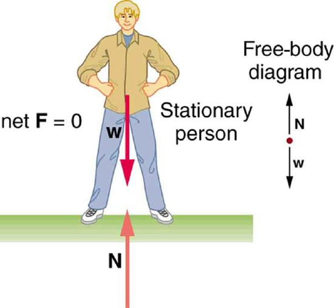
![A moving car is shown. Four normal vectors at each wheel are shown. At the rear wheel, a rightward arrow labeled as applied F is shown. Another arrow, which is labeled as f and points left, toward the front of the car, is also shown. A green vector at the top of the car shows the constant velocity vector. A free-body diagram is shown at the right with a point. From the point, the weight of the car is downward. Friction force vector f is toward left and applied force vector is toward right. Four normal vectors are shown upward above the point.](images/ch9/fig9-3-a-moving-car-is-shown-four-normal-vector.jpg)
However, it is not sufficient for the net external force of a system to be zero for a system to be in equilibrium. Consider the two situations illustrated in Figures and where forces are applied to an ice hockey stick lying flat on ice. The net external force is zero in both situations shown in the figure; but in one case, equilibrium is achieved, whereas in the other, it is not. In Figure , the ice hockey stick remains motionless. But in Figure , with the same forces applied in different places, the stick experiences accelerated rotation. Therefore, we know that the point at which a force is applied is another factor in determining whether or not equilibrium is achieved. This will be explored further in the next section.
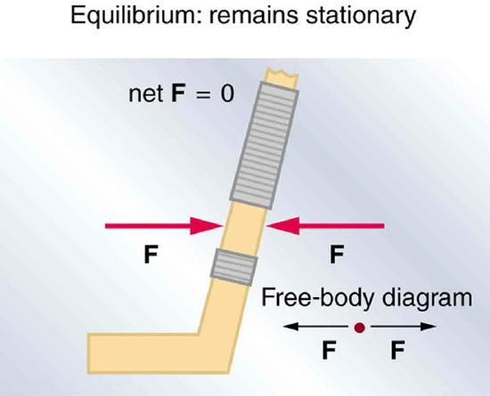
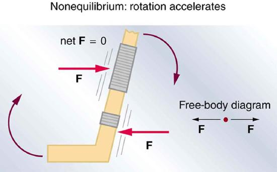
PhET Explorations: Torque
Investigate howtorque causes an object to rotate. Discover the relationships between angular acceleration, moment of inertia, angular momentum and torque.
📖 OpenStax College Physics, Section 9.1. openstax.org · CC BY 4.0
- State the second condition that is necessary to achieve equilibrium.
- Explain torque and the factors on which it depends.
- Describe the role of torque in rotational mechanics.
The second condition necessary to achieve equilibrium involves avoiding accelerated rotation (maintaining a constant angular velocity. A rotating body or system can be in equilibrium if its rate of rotation is constant and remains unchanged by the forces acting on it. To understand what factors affect rotation, let us think about what happens when you open an ordinary door by rotating it on its hinges.
Several familiar factors determine how effective you are in opening the door (Figure . First of all, the larger the force, the more effective it is in opening the door—obviously, the harder you push, the more rapidly the door opens. Also, the point at which you push is crucial. If you apply your force too close to the hinges, the door will open slowly, if at all. Most people have been embarrassed by making this mistake and bumping up against a door when it did not open as quickly as expected. Finally, the direction in which you push is also important. The most effective direction is perpendicular to the door—we push in this direction almost instinctively.
![In the figure, six top views of a door are shown. In the first figure, a force vector is shown in the North West direction. The perpendicular distance of the force from the point of rotation is r. In the second figure, a force is applied in the opposite direction at the same distance from the hinges. In the third figure, a smaller force in applied at the same point. In the next figure, a horizontal force is applied at the same point. In this case, the perpendicular distance from the hinges is shown as r sin theta. In the next figure, force is applied at a distance near the hinges. In the final figure, the force is shown along the direction of hinges toward the handle of the door.](images/ch9/fig9-6-in-the-figure-six-top-views-of-a-door-ar.jpg)
The magnitude, direction, and point of application of the force are incorporated into the definition of the physical quantity called torque.Torqueis the rotational equivalent of a force. It is a measure of the effectiveness of a force in changing or accelerating a rotation (changing the angular velocity over a period of time). In equation form, the magnitude of torque is defined to be
where \(\tau\) (the Greek letter tau) is the symbol for torque, \(r\) is the distance from the pivot point to the point where the force is applied, \(F\) is the magnitude of the force, and \(\theta\) is the angle between the force and the vector directed from the point of application to the pivot point, as seen in Figures and .
![In the first part of the figure, a hockey stick is shown. At a point A near the bottom, a nail is fixed. A force is applied at a point near the holding grip of the hockey stick. A quarter circular arrow shows that the stick rotates in the counterclockwise direction. The perpendicular distance between the pivot point and the force vector direction is labeled as r-perpendicular, and the angle between the direction of force and the line joining the pivot A to the point of application of force is given as theta. In the second part of the figure, the pivot point is near the top of the stick and the point of application of the force is about the same as that in the first part of the figure. An upward quarter circle arrow shows that the stick rotates in the clockwise direction.](images/ch9/fig9-7-in-the-first-part-of-the-figure-a-hockey.jpg)
An alternative expression for torque is given in terms of theperpendicular lever arm \(r_{\perp}\)as shown in Figures and , which is defined as
The perpendicular lever arm \(r_{\perp}\) is the shortest distance from the pivot point to the line along which \(F\) acts; it is shown as a dashed line in Figures and . Note that the line segment that defines the distance \(r_{\perp}\) is perpendicular to \(F\), as its name implies. It is sometimes easier to find or visualize \(r_{\perp}\) than to find both \(r\) and \(\theta\). In such cases, it may be more convenient to use \(\tau = r_{perp}F\) rather than \(\tau = rF \, \sin \, \theta\) for torque, but both are equally valid.
TheSI unit of torqueis newtons times meters, usually written as \(N \cdot m\). For example, if you push perpendicular to the door with a force of 40 N at a distance of 0.800 m from the hinges, you exert a torque of \(32 \, N \cdot m(0.800 \, m \times 40 \, N \times sin \, 90^o)\) relative to the hinges. If you reduce the force to 20 N, the torque is reduced to \(16 \, N \cdot m\), and so on.
The torque is always calculated with reference to some chosen pivot point. For the same applied force, a different choice for the location of the pivot will give you a different value for the torque, since both \(r\) and \(\theta\) depend on the location of the pivot. Any point in any object can be chosen to calculate the torque about that point. The object may not actually pivot about the chosen “pivot point.”
Note that for rotation in a plane, torque has two possible directions. Torque is either clockwise or counterclockwise relative to the chosen pivot point, as illustrated for points B and A, respectively, in Figure . If the object can rotate about point A, it will rotate counterclockwise, which means that the torque for the force is shown as counterclockwise relative to A. But if the object can rotate about point B, it will rotate clockwise, which means the torque for the force shown is clockwise relative to B. Also, the magnitude of the torque is greater when the lever arm is longer.
Now,the second condition necessary to achieve equilibriumis thatthe net external torque on a system must be zero. An external torque is one that is created by an external force. You can choose the point around which the torque is calculated. The point can be the physical pivot point of a system or any other point in space—but it must be the same point for all torques. If the second condition (net external torque on a system is zero) is satisfied for one choice of pivot point, it will also hold true for any other choice of pivot point in or out of the system of interest. (This is true only in an inertial frame of reference.) The second condition necessary to achieve equilibrium is stated in equation form as
where net means total. Torques, which are in opposite directions are assigned opposite signs. A common convention is to call counterclockwise (ccw) torques positive and clockwise (cw) torques negative.
When two children balance a seesaw as shown in Figure , they satisfy the two conditions for equilibrium. Most people have perfect intuition about seesaws, knowing that the lighter child must sit farther from the pivot and that a heavier child can keep a lighter one off the ground indefinitely.
![On the right of the diagram is a long light-brown rectangle with a solid black dot on the right end. Below the long rectangle is a double headed arrow pointing to vertical lines at either end of the block labeled with a d in the center. Below the left vertical line is a red arrow pointing up labeled FA. To the left of the left vertical line is a red arrow pointing to the right labeled FB. Above the light-brown long rectangle is a short line segment pointing up labeled FI. From the top of the FI line is another short line moving toward the left and labeled FII. There is red arrow labeled FC pointing at about 30 degrees down and to the right to close the triangle between FI, FII, and FC. The angle between FII and FC is labeled as theta.](images/ch9/fig9-8-on-the-right-of-the-diagram-is-a-long-li.jpg)
The two children shown in Figure are balanced on a seesaw of negligible mass. (This assumption is made to keep the example simple—more involved examples will follow.) The first child has a mass of 26.0 kg and sits 1.60 m from the pivot.
Both conditions for equilibrium must be satisfied. In part (a), we are asked for a distance; thus, the second condition (regarding torques) must be used, since the first (regarding only forces) has no distances in it. To apply the second condition for equilibrium, we first identify the system of interest to be the seesaw plus the two children. We take the supporting pivot to be the point about which the torques are calculated. We then identify all external forces acting on the system.
The three external forces acting on the system are the weights of the two children and the supporting force of the pivot. Let us examine the torque produced by each. Torque is defined to be
Here \(\theta = 90^o,\) so that \(sin \, \theta = 1\) for all three forces. That means \(r_{\perp} = r\) for all three. The torques exerted by the three forces are first,
Note that a minus sign has been inserted into the second equation because this torque is clockwise and is therefore negative by convention. Since \(F_p\) acts directly on the pivot point, the distance \(r_p\) is zero. A force acting on the pivot cannot cause a rotation, just as pushing directly on the hinges of a door will not cause it to rotate. Now, the second condition for equilibrium is that the sum of the torques on both children is zero. Therefore
Weight is mass times the acceleration due to gravity. Entering \(mg\) for \(w\), we get
Solve this for the unknown \(r_2\):
The quantities on the right side of the equation are known; thus, \(r_2\) is
As expected, the heavier child must sit closer to the pivot (1.30 m versus 1.60 m) to balance the seesaw.
This part asks for a force \(F_p\). The easiest way to find it is to use the first condition for equilibrium, which is
The forces are all vertical, so that we are dealing with a one-dimensional problem along the vertical axis; hence, the condition can be written as
where we again call the vertical axis they-axis. Choosing upward to be the positive direction, and using plus and minus signs to indicate the directions of the forces, we see that
This equation yields what might have been guessed at the beginning:
So, the pivot supplies a supporting force equal to the total weight of the system:
Entering known values gives
The two results make intuitive sense. The heavier child sits closer to the pivot. The pivot supports the weight of the two children. Part (b) can also be solved using the second condition for equilibrium, since both distances are known, but only if the pivot point is chosen to be somewhere other than the location of the seesaw’s actual pivot!
Several aspects of the preceding example have broad implications. First, the choice of the pivot as the point around which torques are calculated simplified the problem. Since \(F_p\) is exerted on the pivot point, its lever arm is zero. Hence, the torque exerted by the supporting force \(F_p\) is zero relative to that pivot point. The second condition for equilibrium holds for any choice of pivot point, and so we choose the pivot point to simplify the solution of the problem.
Second, the acceleration due to gravity canceled in this problem, and we were left with a ratio of masses.This will not always be the case. Always enter the correct forces—do not jump ahead to enter some ratio of masses.
Third, the weight of each child is distributed over an area of the seesaw, yet we treated the weights as if each force were exerted at a single point. This is not an approximation—the distances \(r_{\perp}\) and \(r_2\) are the distances to points directly below thecenter of gravityof each child. As we shall see in the next section, the mass and weight of a system can act as if they are located at a single point.
Finally, note that the concept of torque has an importance beyond static equilibrium.Torque plays the same role in rotational motion that force plays in linear motion.We will examine this in the next chapter.
📖 OpenStax College Physics, Section 9.2. openstax.org · CC BY 4.0
- State the types of equilibrium.
- Describe stable and unstable equilibriums.
- Describe neutral equilibrium.
It is one thing to have a system in equilibrium; it is quite another for it to be stable. The toy doll perched on the man’s hand in Figure , for example, is not in stable equilibrium. There arethree types of equilibrium:stable,unstable, andneutral. Figures throughout this module illustrate various examples.
Figure presents a balanced system, such as the toy doll on the man’s hand, which has its center of gravity (cg) directly over the pivot, so that the torque of the total weight is zero. This is equivalent to having the torques of the individual parts balanced about the pivot point, in this case the hand. The cgs of the arms, legs, head, and torso are labeled with smaller type.
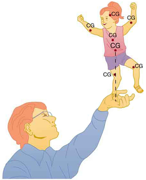
A system is said to be instable equilibriumif, when displaced from equilibrium, it experiences a net force or torque in a direction opposite to the direction of the displacement. For example, a marble at the bottom of a bowl will experience arestoringforce when displaced from its equilibrium position. This force moves it back toward the equilibrium position. Most systems are in stable equilibrium, especially for small displacements. For another example of stable equilibrium, see the pencil in Figure .
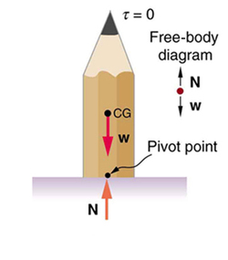
A system is inunstable equilibriumif, when displaced, it experiences a net force or torque in thesamedirection as the displacement from equilibrium. A system in unstable equilibrium accelerates away from its equilibrium position if displaced even slightly. An obvious example is a ball resting on top of a hill. Once displaced, it accelerates away from the crest. See the next several figures for examples of unstable equilibrium.
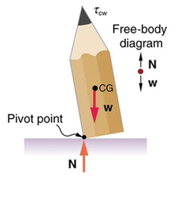
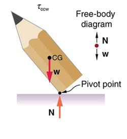
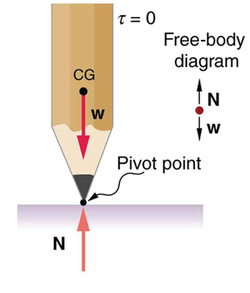
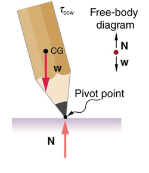
A system is inneutral equilibriumif its equilibrium is independent of displacements from its original position. A marble on a flat horizontal surface is an example. Combinations of these situations are possible. For example, a marble on a saddle is stable for displacements toward the front or back of the saddle and unstable for displacements to the side. Figure shows another example of neutral equilibrium.
![In figure a, a ball is lying on a flat surface and the point of contact with the surface is labeled pivot point. The weight of the ball is acting at the center of gravity of the ball. The normal force N is in the same line as the weight of the ball. The torque on the ball is zero. In figure b, a side view of a pencil lying flat on a table is shown. The sharp end of the pencil is toward right. The weight of the pencil is acting at the center of gravity of the pencil. The normal reaction N of the table surface is in the same line of action as the weight but in the upward direction.](images/ch9/fig9-15-in-figure-a-a-ball-is-lying-on-a-flat-su.jpg)
When we consider how far a system in stable equilibrium can be displaced before it becomes unstable, we find that some systems in stable equilibrium are more stable than others. The pencil in Figure and the person in Figure \(\PageIndex{8a}\) are in stable equilibrium, but become unstable for relatively small displacements to the side. The critical point is reached when the cg is no longerabovethe base of support. Additionally, since the cg of a person’s body is above the pivots in the hips, displacements must be quickly controlled. This control is a central nervous system function that is developed when we learn to hold our bodies erect as infants. For increased stability while standing, the feet should be spread apart, giving a larger base of support. Stability is also increased by lowering one’s center of gravity by bending the knees, as when a football player prepares to receive a ball or braces themselves for a tackle. A cane, a crutch, or a walker increases the stability of the user, even more as the base of support widens. Usually, the cg of a female is lower (closer to the ground) than a male. Young children have their center of gravity between their shoulders, which increases the challenge of learning to walk.
![Part a of the figure shows a man standing on the ground. The feet are a shoulder-width apart from each other. The weight W of the man is acting at the center of gravity of the body of the man. Two normal reactions N each are shown acting on the feet of the man. The distance between the feet of the man is marked as the base of support. A free body diagram is also shown on the left side of the figure. Part b of the figure shows a man standing upright with his knees bent. The feet are a distance apart from each other. The weight W of the man is acting at the center of gravity of the body of the man. Two normal reactions N each are shown acting on the feet of the man. The distance between the feet of the man is marked as the base of support.](images/ch9/fig9-16-part-a-of-the-figure-shows-a-man-standin.jpg)
Animals such as chickens have easier systems to control. Figure shows that the cg of a chicken lies below its hip joints and between its widely separated and broad feet. Even relatively large displacements of the chicken’s cg are stable and result in restoring forces and torques that return the cg to its equilibrium position with little effort on the chicken’s part. Not all birds are like chickens, of course. Some birds, such as the flamingo, have balance systems that are almost as sophisticated as that of humans.
Figure shows that the cg of a chicken is below the hip joints and lies above a broad base of support formed by widely-separated and large feet. Hence, the chicken is in very stable equilibrium, since a relatively large displacement is needed to render it unstable. The body of the chicken is supported from above by the hips and acts as a pendulum between the hips. Therefore, the chicken is stable for front-to-back displacements as well as for side-to-side displacements.
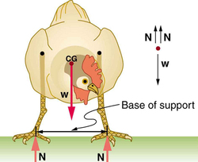
Engineers and architects strive to achieve extremely stable equilibriums for buildings and other systems that must withstand wind, earthquakes, and other forces that displace them from equilibrium. Although the examples in this section emphasize gravitational forces, the basic conditions for equilibrium are the same for all types of forces. The net external force must be zero, and the net torque must also be zero.
📖 OpenStax College Physics, Section 9.3. openstax.org · CC BY 4.0
- Discuss the applications of Statics in real life.
- State and discuss various problem-solving strategies in Statics.
Statics can be applied to a variety of situations, ranging from raising a drawbridge to bad posture and back strain. We begin with a discussion of problem-solving strategies specifically used for statics. Since statics is a special case of Newton’s laws, both the general problem-solving strategies and the special strategies for Newton’s laws, discussed inProblem-Solving Strategies, still apply.
Problem-Solving Strategy: Static Equilibrium Situations
Now let us apply this problem-solving strategy for the pole vaulter shown in the three figures below. The pole is uniform and has a mass of 5.00 kg. In Figure , the pole’s cg lies halfway between the vaulter’s hands. It seems reasonable that the force exerted by each hand is equal to half the weight of the pole, or 24.5 N. This obviously satisfies the first condition for equilibrium \((net \, F = 0)\). The second condition \((net \, \tau = 0)\) is also satisfied, as we can see by choosing the cg to be the pivot point. The weight exerts no torque about a pivot point located at the cg, since it is applied at that point and its lever arm is zero. The equal forces exerted by the hands are equidistant from the chosen pivot, and so they exert equal and opposite torques.
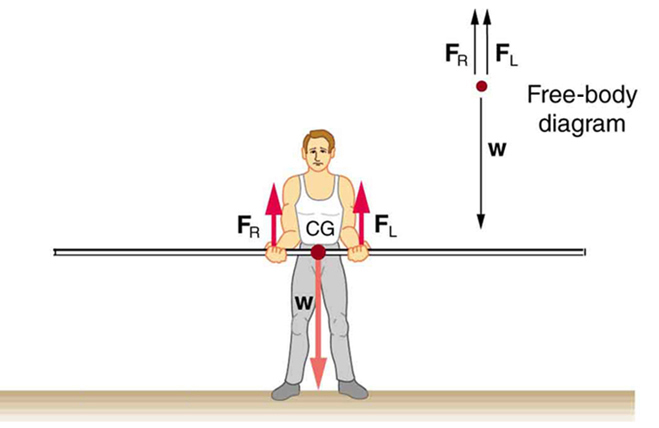
Similar arguments hold for other systems where supporting forces are exerted symmetrically about the cg. For example, the four legs of a uniform table each support one-fourth of its weight. In Figure , a pole vaulter holding a pole with its cg halfway between his hands is shown. Each hand exerts a force equal to half the weight of the pole, \(F_r = F_L = w/2\). (b) The pole vaulter moves the pole to his left, and the forces that the hands exert are no longer equal. SeeFigure. If the pole is held with its cg to the left of the person, then he must push down with his right hand and up with his left. The forces he exerts are larger here because they are in opposite directions and the cg is at a long distance from either hand.
Similar observations can be made using a meter stick held at different locations along its length.
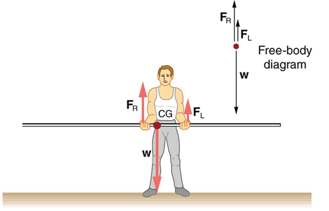
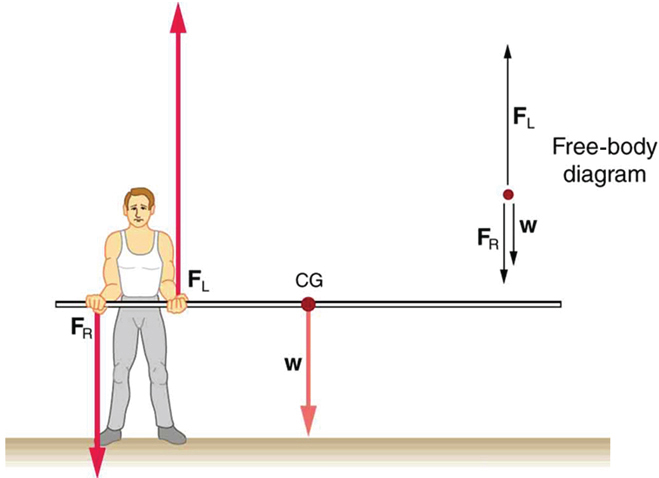
If the pole vaulter holds the pole as shown inFigure, the situation is not as simple. The total force he exerts is still equal to the weight of the pole, but it is not evenly divided between his hands. (If \(F_L = F_R \), then the torques about the cg would not be equal since the lever arms are different.) Logically, the right hand should support more weight, since it is closer to the cg. In fact, if the right hand is moved directly under the cg, it will support all the weight. This situation is exactly analogous to two people carrying a load; the one closer to the cg carries more of its weight. Finding the forces \(F_L\) and \(F_R\) is straightforward, as the next example shows.
If the pole vaulter holds the pole from near the end of the pole (Figure), the direction of the force applied by the right hand of the vaulter reverses its direction.
Example: What Force Is Needed to Support a Weight Held Near Its CG?
For the situation shown inFigure, calculate: (a) \(F_R\), the force exerted by the right hand, and (b) \(F_L\), the force exerted by the left hand. The hands are 0.900 m apart, and the cg of the pole is 0.600 m from the left hand.
Figureincludes a free body diagram for the pole, the system of interest. There is not enough information to use the first condition for equilibrium \((net \, F = 0)\), since two of the three forces are unknown and the hand forces cannot be assumed to be equal in this case. There is enough information to use the second condition for equilibrium \((net \, \tau = 0)\) if the pivot point is chosen to be at either hand, thereby making the torque from that hand zero. We choose to locate the pivot at the left hand in this part of the problem, to eliminate the torque from the left hand.
There are now only two nonzero torques, those from the gravitational force \((\tau_W)\) and from the push or pull of the right hand \((\tau_R)\). Stating the second condition in terms of clockwise and counterclockwise torques,
or the algebraic sum of the torques is zero.
Here this is \[\tau_R = -\tau_W\]
since the weight of the pole creates a counterclockwise torque and the right hand counters with a clockwise toque. Using the definition of torque, \(\tau = rF \, sin \, \theta\), noting that \(\theta = 90^o\), and substituting known values, we obtain
\[(0.900 \, m)(F_R) = (0.600 \, m)(mg).\] Thus,
The first condition for equilibrium is based on the free body diagram in the figure. This implies that by Newton’s second law:
From this we can conclude \[F_L + F_R = w = mg\]
Solving for \(F_L\), we obtain
If the pole vaulter holds the pole as he might at the start of a run, shown inFigure, the forces change again. Both are considerably greater, and one force reverses direction.
PhET Explorations: Balancing Act
Play with objects on a teeter totter to learn about balance. Test what you've learned by trying the Balance Challenge game.
Figure :Balancing Act
📖 OpenStax College Physics, Section 9.4. openstax.org · CC BY 4.0
- Describe different simple machines.
- Calculate the mechanical advantage.
Simple machines are devices that can be used to multiply or augment a force that we apply – often at the expense of a distance through which we apply the force. The word for “machine” comes from the Greek word meaning “to help make things easier.” Levers, gears, pulleys, wedges, and screws are some examples of machines. Energy is still conserved for these devices because a machine cannot do more work than the energy put into it. However, machines can reduce the input force that is needed to perform the job. The ratio of output to input force magnitudes for any simple machine is called itsmechanical advantage(MA).
One of the simplest machines is the lever, which is a rigid bar pivoted at a fixed place called the fulcrum. Torques are involved in levers, since there is rotation about a pivot point. Distances from the physical pivot of the lever are crucial, and we can obtain a useful expression for the MA in terms of these distances.
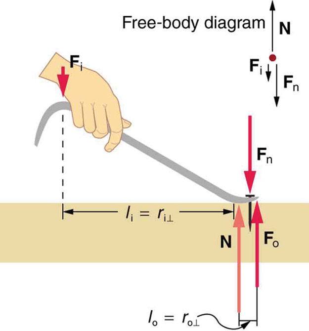
Figureshows a lever type that is used as a nail puller. Crowbars, seesaws, and other such levers are all analogous to this one \(F_i\) is the input force and \(F_o\) is the output force. There are three vertical forces acting on the nail puller (the system of interest) – these are \(F_i\), \(F_o\), and \(N.\) \(F_n\) is the reaction force back on the system, equal and opposite to \(F_o\). (note that \(F_o\) is not a force on the system.) \(N\) is the normal force upon the lever, and its torque is zero since it is exerted at the pivot. The torques due to \(F_i\) and \(F_n\) must be equal to each other if the nail is not moving, to satisfy the second condition for equilibrium \((net \, \tau = 0)\). (In order for the nail to actually move, the torque due to \(F_i\) must be ever-so-slightly greater than torque due to \(F_n\).) Hence,
This equation is true for levers in general. For the nail puller, the MA is certainly greater than one. The longer the handle on the nail puller, the greater the force you can exert with it.
Two other types of levers that differ slightly from the nail puller are a wheelbarrow and a shovel, shown inFigure. All these lever types are similar in that only three forces are involved – the input force, the output force, and the force on the pivot – and thus their MAs are given by \(MA = \frac{F_o}{F_i} \) and \(MA = \frac{d_1}{d_2}\), with distances being measured relative to the physical pivot. The wheelbarrow and shovel differ from the nail puller because both the input and output forces are on the same side of the pivot.
In the case of the wheelbarrow, the output force or load is between the pivot (the wheel’s axle) and the input or applied force. In the case of the shovel, the input force is between the pivot (at the end of the handle) and the load, but the input lever arm is shorter than the output lever arm. In this case, the MA is less than one.
![A wheelbarrow is shown in which the input force F sub I is shown as a vector in vertically upward direction below the handle of wheelbarrow. The weight of the wheelbarrow is downward at the center of gravity. The normal reaction of the ground is acting at the wheel in upward direction. The perpendicular distance between the normal reaction and the input force F sub I is labeled as R sub I and the distance between output force F sub O and normal reaction is labeled as R sub O. In figure b, a man is holding a shovel in his hands. One hand is at one end of the handle and the other hand is holding the shovel at the middle. The center of gravity of the shovel is at its flat end. The weight of the shovel is acting at the center of gravity. The input force is acting at the hand in the middle in upward direction and the end of the shovel is acting as pivot. A free body diagram is also shown at the right side of the figure.](images/ch9/fig9-22-a-wheelbarrow-is-shown-in-which-the-inpu.jpg)
In the wheelbarrow ofFigure, the load has a perpendicular lever arm of 7.50 cm, while the hands have a perpendicular lever arm of 1.02 m. (a) What upward force must you exert to support the wheelbarrow and its load if their combined mass is 45.0 kg? (b) What force does the wheelbarrow exert on the ground?
Here, we use the concept of mechanical advantage.
(a) In this case, \(\frac{F_o}{F_i} = \frac{l_i}{l_o}\) becomes \[F_i = F_o\dfrac{l_o}{l_i},\]
Adding values into this equation yields
The free-body diagram (seeFigure) gives the following normal force: \[F_i = + N = W.\] Therefore,
An even longer handle would reduce the force needed to lift the load. The MA here is \(MA = 1.01/0.0750 = 13.6\)
Another very simple machine is the inclined plane. Pushing a cart up a plane is easier than lifting the same cart straight up to the top using a ladder, because the applied force is less. However, the work done in both cases (assuming the work done by friction is negligible) is the same. Inclined lanes or ramps were probably used during the construction of the Egyptian pyramids to move large blocks of stone to the top.
A crank is a lever that can be rotated \(360^o\) about its pivot, as shown inFigure. Such a machine may not look like a lever, but the physics of its actions remain the same. The MA for a crank is simply the ratio of the radii \(r_i/r_o\). Wheels and gears have this simple expression for their MAs too. The MA can be greater than 1, as it is for the crank, or less than 1, as it is for the simplified car axle driving the wheels, as shown. If the axle’s radius is \(2.0 \, cm\) and the wheel's radius is \(24.0 \, cm\), then \(MA = 2.0/24.0 = 0.083\) and the axle would have to exert a force of \(12,000 \, N\) on the wheel to enable it to exert a force of \(1000 \, N\) on the ground.
![In figure a, a crank lever is shown in which a hand is at the handle of the crank lever. The output force F sub O is at the base of the lever and the input force F sub I is at the handle of the lever. The distance between input force and output force is labeled as R sub I. In figure b, a simplified axle of the car is shown. The input force is shown as a vector F sub I on the axle toward right. The output force is shown at the point of contact of the wheel with the ground toward left. The distance between the output force and the pivot point is labeled as R sub O. In figure c, rope over the pulley is shown. The input force is shown as a downward arrow at the left part of rope. The output force is acting on the right part of the rope. The center of the pulley is the pivot point. The distances of the two forces from the pivot are R sub I and R sub O respectively.](images/ch9/fig9-23-in-figure-a-a-crank-lever-is-shown-in-wh.jpg)
An ordinary pulley has an MA of 1; it only changes the direction of the force and not its magnitude. Combinations of pulleys, such as those illustrated inFigure, are used to multiply force. If the pulleys are friction-free, then the force output is approximately an integral multiple of the tension in the cable. The number of cables pulling directly upward on the system of interest, as illustrated in the figures given below, is approximately the MA of the pulley system. Since each attachment applies an external force in approximately the same direction as the others, they add, producing a total force that is nearly an integral multiple of the input force \(T\).
![In figure a, a rope over two pulleys is shown. One pulley is fixed at the roof and the other is hanging through the rope. A weight is hanging from the second pulley. The tensions T are shown at the two parts of hanging pulley and at the free end of the rope. The mechanical advantage of the system is two. In figure b, a set of three pulleys is shown. A pulley is fixed at the roof with another pulley below it. The third pulley is hanging through the rope with a weight hanging at it. The tensions on the rope are shown as vectors on the rope and at the end of the rope. In figure c, set of three pulleys is shown. One of the pulleys is fixed at the roof. Two connected pulleys are hanging through a rope over the first pulley. The directions of the tensions are marked on the ropes and at the end of the rope.](images/ch9/fig9-24-in-figure-a-a-rope-over-two-pulleys-is-s.jpg)
📖 OpenStax College Physics, Section 9.5. openstax.org · CC BY 4.0
- Explain the forces exerted by muscles.
- State how a bad posture causes back strain.
- Discuss the benefits of skeletal muscles attached close to joints.
- Discuss various complexities in the real system of muscles, bones, and joints.
Muscles, bones, and joints are some of the most interesting applications of statics. There are some surprises. Muscles, for example, exert far greater forces than we might think.Figureshows a forearm holding a book and a schematic diagram of an analogous lever system. The schematic is a good approximation for the forearm, which looks more complicated than it is, and we can get some insight into the way typical muscle systems function by analyzing it.
Muscles can only contract, so they occur in pairs. In the arm, the biceps muscle is a flexor—that is, it closes the limb. The triceps muscle is an extensor that opens the limb. This configuration is typical of skeletal muscles, bones, and joints in humans and other vertebrates. Most skeletal muscles exert much larger forces within the body than the limbs apply to the outside world. The reason is clear once we realize that most muscles are attached to bones via tendons close to joints, causing these systems to have mechanical advantages much less than one. Viewing them as simple machines, the input force is much greater than the output force, as seen inFigure.
![A forearm of a person holding a physics book is shown. The biceps and triceps muscles of the arm are visible. The elbow joint is the pivot point. The upper part of the arm is vertical and the lower part is horizontal. Biceps muscles are applying a force F B upward. The vertical bone of hand exerts a force F E on the pivot. At the midpoint of the lower part of the hand, the center of gravity of the hand is shown where the weight of the hand acts. The midpoint of the front face of the book is its center of gravity, where its weight acts downward. A free body diagram is also shown and the distances of the three forces F-B, C-G of arm, and C-G of book from the pivot are shown as r one, r two and r three.](images/ch9/fig9-25-a-forearm-of-a-person-holding-a-physics-.jpg)
Example: Muscles Exert Bigger Forces Than You Might Think
Calculate the force the biceps muscle must exert to hold the forearm and its load as shown inFigure, and compare this force with the weight of the forearm plus its load. You may take the data in the figure to be accurate to three significant figures.
There are four forces acting on the forearm and its load (the system of interest). The magnitude of the force of the biceps is \(F_B\); that of the elbow joint is \(F_E\); that of the weights of the forearm is \(w_a\), and its loadis \(w_b\). Two of these are unknown \((F_B\) and \(F_E)\) so that the first condition for equilibrium cannot by itself yield \(F_B\). But if we use the second condition and choose the pivot to be at the elbow, then the torque due to \(F_B\) is zero, and the only unknown becomes \(F_B\).
The torques created by the weights are clockwise relative to the pivot, while the torque created by the biceps is counterclockwise; thus, the second condition for equilibrium \((net \, \tau = 0)\) becomes
Note that \(sin \, \theta = 1\) for all forces, since \(\theta = 90^o\) for all forces. This equation can easily be solved for \(F_B\) in terms of known quantities, yielding \[F_B = \dfrac{r_2w_a + r_3w_b}{r_1}.\]
Entering the known values gives
which yields \[F_B = 470 \, N.\]
Now, the combined weight of the arm and its load is
This means that the biceps muscle is exerting a force 7.38 times the weight supported.
In the above example of the biceps muscle, the angle between the forearm and upper arm is 90°. If this angle changes, the force exerted by the biceps muscle also changes. In addition, the length of the biceps muscle changes. The force the biceps muscle can exert depends upon its length; it is smaller when it is shorter than when it is stretched.
Very large forces are also created in the joints. In the previous example, the downward force \(F_E\) exerted by the humerus at the elbow joint equals 407 N, or 6.38 times the total weight supported. (The calculation of \(F_E\) is straightforward and is left as an end-of-chapter problem.) Because muscles can contract, but not expand beyond their resting length, joints and muscles often exert forces that act in opposite directions and thus subtract. (In the above example, the upward force of the muscle minus the downward force of the joint equals the weight supported—that is, \(470 \, N - 470 \, N = 63 \, N\), approximately equal to the weight supported.) Forces in muscles and joints are largest when their load is a long distance from the joint, as the book is in the previous example.
In racquet sports such as tennis the constant extension of the arm during game play creates large forces in this way. The mass times the lever arm of a tennis racquet is an important factor, and many players use the heaviest racquet they can handle. It is no wonder that joint deterioration and damage to the tendons in the elbow, such as “tennis elbow,” can result from repetitive motion, undue torques, and possibly poor racquet selection in such sports. Various tried techniques for holding and using a racquet or bat or stick not only increases sporting prowess but can minimize fatigue and long-term damage to the body. For example, tennis balls correctly hit at the “sweet spot” on the racquet will result in little vibration or impact force being felt in the racquet and the body—less torque as explained inCollisions of Extended Bodies in Two Dimensions. Twisting the hand to provide top spin on the ball or using an extended rigid elbow in a backhand stroke can also aggravate the tendons in the elbow.
Training coaches and physical therapists use the knowledge of relationships between forces and torques in the treatment of muscles and joints. In physical therapy, an exercise routine can apply a particular force and torque which can, over a period of time, revive muscles and joints. Some exercises are designed to be carried out under water, because this requires greater forces to be exerted, further strengthening muscles. However, connecting tissues in the limbs, such as tendons and cartilage as well as joints are sometimes damaged by the large forces they carry. Often, this is due to accidents, but heavily muscled athletes, such as weightlifters, can tear muscles and connecting tissue through effort alone.
The back is considerably more complicated than the arm or leg, with various muscles and joints between vertebrae, all having mechanical advantages less than 1. Back muscles must, therefore, exert very large forces, which are borne by the spinal column. Discs crushed by mere exertion are very common. The jaw is somewhat exceptional—the masseter muscles that close the jaw have a mechanical advantage greater than 1 for the back teeth, allowing us to exert very large forces with them. A cause of stress headaches is persistent clenching of teeth where the sustained large force translates into fatigue in muscles around the skull.
Figureshows how bad posture causes back strain. In part (a), we see a person with good posture. Note that her upper body’s cg is directly above the pivot point in the hips, which in turn is directly above the base of support at her feet. Because of this, her upper body’s weight exerts no torque about the hips. The only force needed is a vertical force at the hips equal to the weight supported. No muscle action is required, since the bones are rigid and transmit this force from the floor. This is a position of unstable equilibrium, but only small forces are needed to bring the upper body back to vertical if it is slightly displaced. Bad posture is shown in part (b); we see that the upper body’s cg is in front of the pivot in the hips. This creates a clockwise torque around the hips that is counteracted by muscles in the lower back. These muscles must exert large forces, since they have typically small mechanical advantages. (In other words, the perpendicular lever arm for the muscles is much smaller than for the cg.) Poor posture can also cause muscle strain for people sitting at their desks using computers. Special chairs are available that allow the body’s CG to be more easily situated above the seat, to reduce back pain. Prolonged muscle action produces muscle strain. Note that the cg of the entire body is still directly above the base of support in part (b) ofFigure. This is compulsory; otherwise the person would not be in equilibrium. We lean forward for the same reason when carrying a load on our backs, to the side when carrying a load in one arm, and backward when carrying a load in front of us, as seen inFigure.
![In part a of the figure, a side view of a girl standing on a surface is shown. The weight of the girl is acting vertically downward and is in the line with her hips. A point above her legs is marked as the pivot point. The weight vector is in the direction of the pivot. In part b, a side view of a girl standing on a surface is shown. The girl is bending slightly toward her front. The weight of her upper body is acting downward and the line of action of weight is not passing through the upper body pivot point.](images/ch9/fig9-26-in-part-a-of-the-figure-a-side-view-of-a.jpg)
You have probably been warned against lifting objects with your back. This action, even more than bad posture, can cause muscle strain and damage discs and vertebrae, since abnormally large forces are created in the back muscles and spine.
![In image a, a man with a child on his shoulders is shown in which the child is holding the head of the man. The center of gravity is marked at the center of his body. In image b, a man with a long bag on his left shoulder and leaning toward the right is shown. The center of gravity is marked at the center of his body slightly left of the middle. In image c, a lady walking toward the right is shown. She is holding books in her hands. The center of gravity is marked at the center of her body above her legs.](images/ch9/fig9-27-in-image-a-a-man-with-a-child-on-his-sho.jpg)
Example: :Do Not Lift with Your Back
Consider the person lifting a heavy box with his back, shown inFigure. (a) Calculate the magnitude of the force \(F_B\) - in the back muscles that is needed to support the upper body plus the box and compare this with his weight. The mass of the upper body is 55.0 kg and the mass of the box is 30.0 kg. (b) Calculate the magnitude and direction of the force \(F_V\) - exerted by the vertebrae on the spine at the indicated pivot point. Again, data in the figure may be taken to be accurate to three significant figures.
By now, we sense that the second condition for equilibrium is a good place to start, and inspection of the known values confirms that it can be used to solve for \(F_B\) - if the pivot is chosen to be at the hips. The torques created by \(w_{ab}\) and \(w_{box}\) - are clockwise, while that created by \(F_B \) - is counterclockwise.
Using the perpendicular lever arms given in the figure, the second condition for equilibrium \((net \, \tau = 0)\) becomes
The ratio of the force the back muscles exert to the weight of the upper body plus its load is
This force is considerably larger than it would be if the load were not present.
More important in terms of its damage potential is the force on the vertebrae \(F_V\) The first condition for equilibrium \((net \, F= 0)\) can be used to find its magnitude and direction. Using \(y\) fo4r vertical and \(x\) for horizontal, the condition for the net external forces along those axes to be zero
Starting with the vertical \((y)\) components, this yields
\[F_{V_y} - w_{ub} - w_{box} - F_B \, sin \, 29^o = 0.\] Thus,
\[= 833 \, N + (4200 \, N) \, sin \, 29.0^o\] yielding
Similarly, for the horizontal \((x)\) components,
\[F_{V_x} - F_B \, cos \, 29.0^o = 0\] yielding
The magnitude of \(F_V \) is given by the Pythagorean theorem:
The direction of \(F_V\) is
Note that the ratio of \(F_V\) to the weight supported is \]\dfrac{F_V}{w_{ub} + w_{box}} = \dfrac{4660 \, N}{833 \, N} = 5.59.\]
This force is about 5.6 times greater than it would be if the person were standing erect. The trouble with the back is not so much that the forces are large—because similar forces are created in our hips, knees, and ankles—but that our spines are relatively weak. Proper lifting, performed with the back erect and using the legs to raise the body and load, creates much smaller forces in the back—in this case, about 5.6 times smaller.
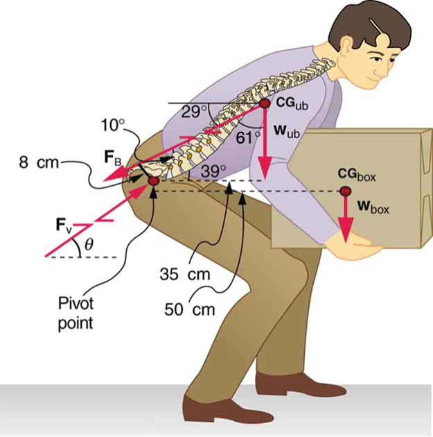
What are the benefits of having most skeletal muscles attached so close to joints? One advantage is speed because small muscle contractions can produce large movements of limbs in a short period of time. Other advantages are flexibility and agility, made possible by the large numbers of joints and the ranges over which they function. For example, it is difficult to imagine a system with biceps muscles attached at the wrist that would be capable of the broad range of movement we vertebrates possess.
There are some interesting complexities in real systems of muscles, bones, and joints. For instance, the pivot point in many joints changes location as the joint is flexed, so that the perpendicular lever arms and the mechanical advantage of the system change, too. Thus the force the biceps muscle must exert to hold up a book varies as the forearm is flexed. Similar mechanisms operate in the legs, which explain, for example, why there is less leg strain when a bicycle seat is set at the proper height. The methods employed in this section give a reasonable description of real systems provided enough is known about the dimensions of the system. There are many other interesting examples of force and torque in the body—a few of these are the subject of end-of-chapter problems.
📖 OpenStax College Physics, Section 9.6. openstax.org · CC BY 4.0
| Section | Title |
|---|---|
| 9.1 | 9.1: The First Condition for Equilibrium |
| 9.2 | 9.2: The Second Condition for Equilibrium |
| 9.3 | 9.3: Stability |
| 9.4 | 9.4: Applications of Statics, Including Problem-Solving Strategies |
| 9.5 | 9.5: Simple Machines |
| 9.6 | 9.6: Forces and Torques in Muscles and Joints |